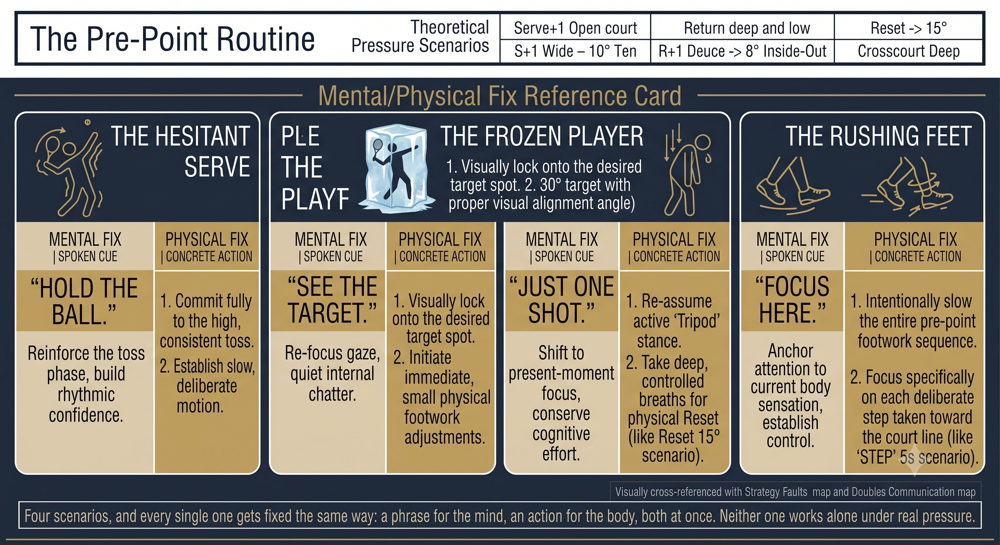

Chương 28: Tâm Lý
(Bản dịch tiếng Việt của Chapter 28 trong Sổ Tay Quần Vợt Thống Nhất)
Trình Tự Trước Điểm, Quiet Eye, Áp Lực
Tâm trí không tách biệt khỏi cơ thể. Quiet Eye chính là huấn luyện tâm lý. Trình tự chính là chuẩn bị thể chất.
Trình Tự Trước Điểm: 30 Đến 40 Giây
Trình tự không phải là mê tín. Đó là một sự thiết lập lại hệ thần kinh. Nó đưa bạn từ điểm trước đến điểm này.

Hình 28.1
— Henry Phạm
Giữa các điểm, bạn có 25 giây. Hãy dùng hết. Trình tự chạy qua bốn giai đoạn:
QUY TẮC: Trình tự không phải là tùy chọn. Đó là cây cầu từ lý thuyết Q-V-ROOT-8-45-Impulse-Kình đến thực thi. Không có trình tự nghĩa là không có nền tảng.
Quiet Eye Dưới Áp Lực
Áp lực không phá vỡ cú đánh của bạn. Áp lực phá vỡ Quiet Eye. Mắt lướt tới mục tiêu, đầu ngẩng lên, mặt vợt mở ra, trái bóng bay dài.
— Henry Phạm

Hình 28.2
Nghiên cứu (Vickers, Wilson) cho thấy dưới áp lực, thời lượng Quiet Eye giảm 30 đến 50%. Khởi động trễ hơn. Kết thúc sớm hơn.
Mẹo Huấn Luyện
Áp lực là một bài kiểm tra Quiet Eye. Nếu bạn giữ được Quiet Eye ở 5-5, 30-40, bạn thắng. Nếu mắt bạn lướt đi, bạn thua. Luyện tập: nói "đỗ" thành tiếng trong tập luyện. Thì thầm nó trong trận đấu.
Hình Hóa: Năm Phút Mỗi Ngày
– Đây không phải là "tưởng tượng chiến thắng." Hình hóa là sự luyện tập thần kinh của Q-V-ROOT-8-45-Impulse-Kình.
– Nhìn thấy: trái bóng rời khỏi dây vợt đối thủ, split step của bạn, mắt bạn đỗ tại điểm nảy, đầu bạn bất động, một số 8 nhỏ, cú phanh, cú xung, trái bóng chạm mục tiêu.

Hình 28.3
– Cảm nhận: chân vặn vào, độ căng ở cơ chéo bụng, lòng bàn tay đẩy, cú xung 1-inch, âm thanh của một trái bóng nặng.
– Thực hiện: năm phút mỗi ngày, ở ngôi thứ nhất, thời gian thực. Bao gồm các khoảnh khắc áp lực — break point, set point.
– Khoa học: hình hóa kích hoạt cùng vỏ não vận động như luyện tập thể chất thật. Nó củng cố myelin trên các đường Q-V-ROOT.
Các Tình Huống Áp Lực: Bốn Trường Hợp Lớn
QUY TẮC: Áp lực không tồn tại trong trái bóng. Nó tồn tại trong cách bạn diễn giải. Thay đổi cách diễn giải, bạn thay đổi sinh lý, và bạn thay đổi Quiet Eye.
Tự Nói: Ba Chế Độ
NGUYÊN LÝ: Không bao giờ tự nói tiêu cực. "Đừng đánh lỡ" — não bộ nghe thấy "lỡ." Hãy nói "trúng mục tiêu" thay vào đó.
Khôi Phục Giữa Các Điểm: Reset 15 Giây
1. Thở ra hoàn toàn (một tác nhân kích hoạt hệ phó giao cảm).
2. Đi đến khăn hoặc hàng rào (tách biệt về thể chất).
3. Một ghi chú kỹ thuật, tối đa: "Tiếp xúc phía trước." Không phải "Đừng muộn."
4. Chân tripod. Cằm gập. Tay 3/10.

Hình 28.4
5. Hai hơi thở chậm. "Tôi đang ở đâu? Bóng gì? Mặt vợt nào?"
6. Bước đến vạch. Bước vào.
Danh Sách Kiểm Tra Tâm Lý
TRÌNH TỰ: BUÔNG BỎ. XEM XÉT. THIẾT LẬP LẠI. BƯỚC VÀO. QUIET EYE: ĐỖ. GIỮ. THẢ. ÁP LỰC: THỞ. TRÌNH TỰ. THỰC THI.
– Trình tự trước điểm: bốn giai đoạn, 30 đến 40 giây, giống hệt mỗi điểm.
– Buông bỏ: thở ra, đi bộ, xóa điểm vừa rồi.
– Xem xét: chỉ một điều chỉnh, không suy nghĩ lặp lại.
– Thiết lập lại: chân tripod, cằm gập, tay 3/10, hai hơi thở, các câu hỏi CORE.
– Bước vào: bước lên, mắt trên mục tiêu, "đỗ, đẩy" hoặc "saber."
– Quiet Eye: đỗ tại điểm nảy, giữ qua tiếp xúc, thả sau đó.
– Áp lực: trình tự giữ nguyên. Câu nhắc bằng lời "đỗ, đẩy." Hơi thở chậm lại.
– Hình hóa: năm phút mỗi ngày, ngôi thứ nhất, thời gian thực, bao gồm áp lực.
– Tự nói: chỉ dẫn, động viên, điều chỉnh — không bao giờ tiêu cực.
Chương Này Dẫn Đến Đâu
Chương này bao quát tâm lý: trình tự trước điểm, Quiet Eye, và áp lực. Chương 29 bao quát thể chất: thể lực chuyên biệt cho tennis và chu kỳ hóa tập luyện. Chương 30 là thẻ tham chiếu nhanh hợp nhất Q-V-ROOT-8-45-Impulse.